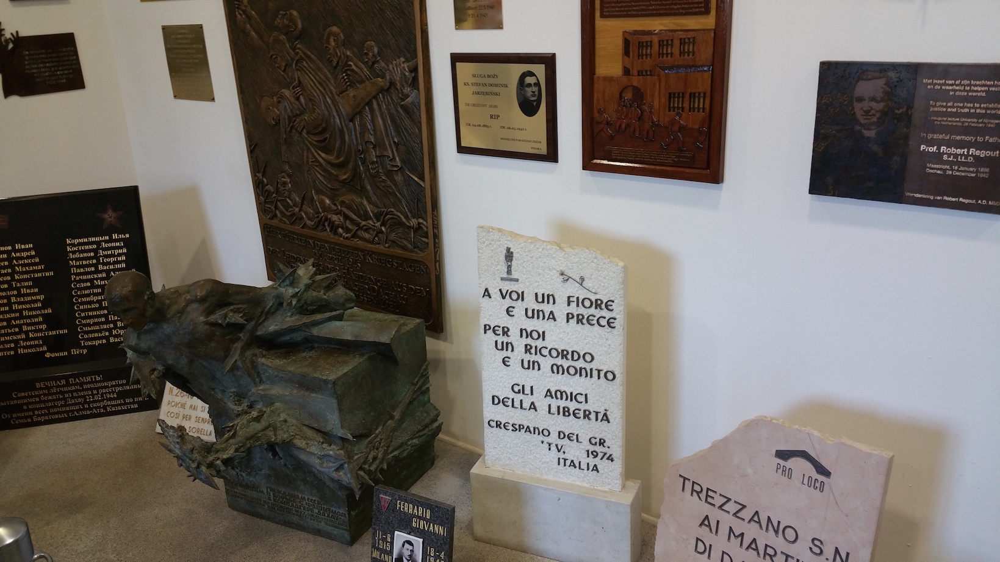

----Personal Essays----
This page contains a series of personal essays, with the newest being first and the oldest being last. It would be best to read these in chronological order. These personal essays are similar to some sort of blog post, and I will continue to update them as time permits. Also, note that I am aware my writing is bad and constructive criticism is welcome. Send me an email.
Deutschland Tour: Day Seven
 Jasper Holton | October 9, 2015
Jasper Holton | October 9, 2015
Our main attraction of this morning was a bit more depressing than the others. We visited the concentration camp of Dachau, where over 200,000 people were imprisoned and 42,000 died. This was the first concentration camp that was set up, and was originally for political prisoners. It served as a model to the many other concentration camps that were erected all over Germany and the surrounding countries. As we solemnly walked to the enterance gate, we were greeted by the words:
"ARBEIT MACHT FREI"
This translates to, "Work brings Freedom". This is a tragically ironic notion, because many of the prisoners in this camp were forced to work until their death. It wasn't until April 29, 1945 that American troops liberated the surviving prisoners. The camp was in use for twelve years.
The electric fence surrounding the camp has a high enough voltage to kill anyone who touches it on contact. For some, this fate was better than enduring the tortures of life inside.
The barracks were tiny, and were always packed over capacity.
Perhaps the most chilling part of the camp was the crematorium.
Nazi propoganda was displayed throought the museum. The Nazis built up hate against Jewish people, and made out Hitler to be some sort of solution to all of Germany's problems.
The words mean: "For the dead to honor, for the living to remember." Memorials like these could be found scattered all over the area. The dead in this camp are especially honored because many of them were those who spoke out against the Nazis and tried to stop what was happening.
Inside the camp was a large museum describing the eintire Nazi regime and the part Dachau played in it. This museum was interesting, but also very depressing. We also visited the living quarters, which were cramped and clearly uncomfortable. We visited the crematorium too. It was eerie being in a place where thousands of people were tortured and died. But the camp and the memorial site Send a powerful message:
"MAY THE EXAMPLE OF THOSE WHO WERE EXTERMINATED HERE BETWEEN 1933-1945 BECAUSE THEY RESISTED NAZISM UNITE THE LIVING FOR THE DEFENCE OF PEACE AND FREEDOM AND IN RESPECT FOR THEIR FELLOW MEN"
We left the camp around midday and went to get some food. Then, we began our drive to Rottenberg ...
Deutschland Tour: Day Six
Jasper Holton | October 8, 2015
Fortunatley we woke up to some nicer weather today. We left the hostel early to go and see some of the various attractions that can be found in München, and we learned about it's historical significance. After that we were given some time to explore ourselves and have lunch, and I naturally had the German classic known as "Currywurst". This dish consists of a delicious sausage covered in curry sauce and served with Pommes (French Fries, Chips). I took some nice pictures of the city too, but it was still a bit cloudy.

Today we also visited the BMW museum. This museum was very well done. It was modern, elegant, and very informative. I especially enjoyed the "Mini Story" exhibit, which explains the evolution of BMW's popular car brand, the Mini.

We went back to the same hostel today, and relaxed for a bit. Then we all went together to a bar, where we once again had a few drinks and danced. We managed to stumble back to our nearby hostel and go to sleep.
Deutschland Tour: Day Five
Jasper Holton | October 7, 2015
The weather in Germany is less than ideal. It's often unpredictable and unpleasant. Today we found ourselves waking up to a steady rain which showed no signs of ceasing. After enjoying a short breakdast, we walked another 40 minutes back down to our bus. Then we drove to the city of München (Munich). It was still raining, so we put off our plans of touring the city and instead went to the Deutsches Museum.
I really like museums, but I had no idea I would like this one as much as I did. The whole museum was essentially a collection of the modern technology and science that humans have accomplished. I am really interested in science and technology, so I found this fascinating. It would take too much time to explain all that I saw, so I have included photos below.


My favourite part of the museum was the Computer Science exhibition. It included a lot of interesting exhibits and information relating to computer science, which I found fascinating. They even had an old Cray 1 Supercomputer, perfectly preserved.

After visiting the museum, we went back to the Hostel. Then we were given some free time to go and explore a bit of the city, and we did so.x
Deutschland Tour: Day Four
Jasper Holton | October 6, 2015
Today we first went to two castles near Füssen: Schloss Hohenschwangau and Schloss Neuschwanstein.
Schloss HohenschwangauThis castle was fairly small by comparison to some of the others, and was the summer home for the royal family. Despite it's size, it was still quite beautiful. Below are some pictures I took around the castle. We were also able to go inside this castle, but photography was not allowed while inside.

 Schloss Neuschwanstein
Schloss Neuschwanstein
This castle was quite incredible. It is the castle that the famous Disney castle was modeled after, and shares some striking similarities. It is near the other castle, Schloss Hohenschwangau, but is higher up on a mountain. The view from the castle was also quite beautiful, with the jagged rock faces and hills covered in green and yellow trees. Here are a few pictures I took in and around the castle.


After completing our visits to both castles, we took a relativley short ride to the town of Oberammagau. We didn't see much of this town, but we did go on a long walk to get to our hostel. It took about 40 minutes of upward climbing across a windy farm road, but the weather was decent so the walk wasn't unpleasant. All of us found this hostel to be the best of all of them. It was a small house overlooking the city with a lot of sleeping space and a large eating area. The place was also quite nicely decorated, and reminded me of a farm house. We had an excellent dinner there, and everyone had a few drinks. This made for quite an enjoyable night, and all of us were up quite late. All in all, this was a great day.
Deutschland Tour: Day Three
Jasper Holton | October 5, 2015
I wasn't sure what to expect when I was told we would be going to an Island. Us being now in South Germany, there wasn't exactly an ocean nearby. However, on the border to Swizerland, there is a large lake. And in this lake is an island, called "Insel Mainau". We drove to this island in the bus, and when we got there we were given a few hours of free time to explore. Exploring was really enjoyable, as the island was full of beautiful trees, gardens, and buildings. One of the main attractions was the butterfly house, a controlled environment where one can go and see butterflies. The pictures I took from this island are below.


When our visit to the island was complete, we headed to Füssen where we went to our hostel. We once again played games and talked in the evening before going to bed.
Deutschland Tour: Day Two
Jasper Holton | October 4, 2015
Today I woke up earlier than I would have liked at our hostel in Heidelberg. After a quick breakfast, we went to see the Heidelberg castle, which has been quite well rebuilt since parts of it were destroyed in various wars. This castle was quite beautiful, below are some pictures I took.


After our visit to the castle, we were on the road again for another three hour drive. This time, we went to Freiburg. Once we got to Freiburg, we were given a short tour of the city and some free time. I explored the city with a few other exchange students, and took a few pictures.


After this, we all went back to the Hostel and played games for a while before going to bed.
Deutschland Tour: Day One
Jasper Holton | October 3, 2015
As an optional part of my exchange, I had the opportunity to take part in a tour of Germany. This was at a little extera cost, but I decided to take the opportunity in order to learn more about this wonderful country, it's culture, and it's history. Today I woke up early and took my suitcase which I had previously packed for my fourteen days of travel. I then drove with my host brother to Duisburg, where we started the tour. The tour began with a three hour drive to the wonderful city of Heidelberg.
Heidelberg is an old city. Thus, all of the buildings are built in the old style. I'll spare you the historical details of this city, suffice it to say that it is beautiful. A section of the Rhine that runs through the city provides an excellent place for ships of all shapes and sizes, and the old buildings contain various shops, all accessed by cobblestone streets.


The various churches here were also quite beautiful, below are some pictures.


After walking around the city and learning about it's history, we went to our Hostel and settled in. We had dinner, and then went back to the city for some free time. We all had a few drinks, and talked with eachother. I had the opportunity to practice some of my German, which I was happy about. I think my language skills are really coming along. I have a long way to go still, but they are already a whole lot better.
Four Weeks of Language School
Jasper Holton | October 1, 2015
I'm done with the first half of my language school! My German is quite a bit better, and I am able to carry out basic conversations in German. I still make a lot of mistakes, as it seems to me that German is a maze of gramatical rules and exceptions, but it's better for sure.
Summer is turning to fall here in Germany, and this shows most in the frigid mornings and the leaves that begin to fall from the trees. However, the days are still warm and the city is beautiful. I have been enjoying spending time with my German friends, and I look forward to my tour of Germany that is coming up soon.
An Afternoon in Köln
Jasper Holton | September 7, 2015
Not far away from Wesel is the beautiful city of Köln (Cologne). I had the opportunity to visit this city during the afternoon, and I really enjoyed it. It was buzzing with activity, with all sorts of people going places near the city center. The main attraction was the Kölner Dom, which is a large cathedral near the center of Koln. This cathedral was built over a period of six hundered years, and is in the beautiful gothic style. Below are some pictures I took during my time in Köln.

(Above) Outside and inside the Kölner Dom


(Above) Pictures from inside the Dom

(Above) And more


(Above) More still

(Above) Here are some more
(Above) A shopping district in Köln
(Above) Breads of various sorts
I am now continuing through my second week of language school. My German language skills have still been improving, and I am getting a much better grip on the grammar of the language. It's difficult for me, but the language school makes it easier and more enjoyable. Though language school requires a lot of time in the train station and a lot of waiting for the train, I still enjoy going to Dusseldorf every day and am able to make productive use of this time.

(Above) Inside and outside the Dusseldorf station.